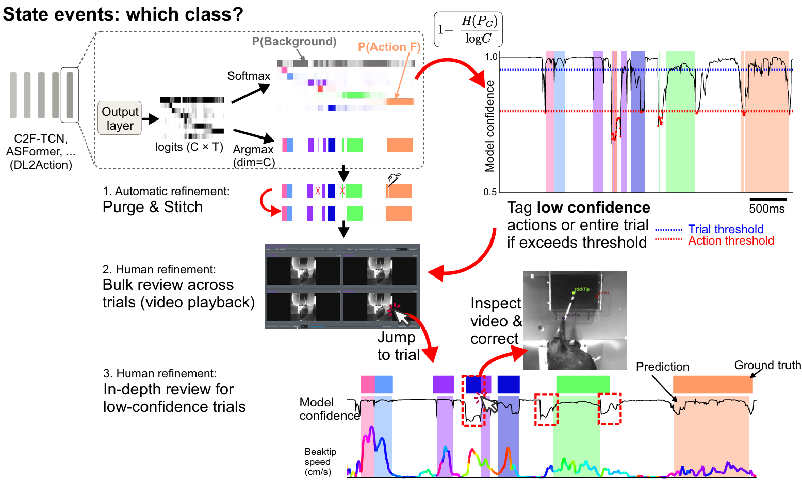
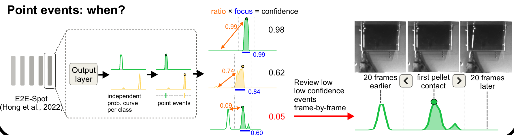

Curating labels#
Curation is overseeing a model’s predictions: confirming the ones it got right and fixing the ones it got wrong. Ethograph makes curation faster by telling you where to look. Within single trials, you can see the model confidence per frame as a dotted line, showing you where the model is uncertain, or may expect false positives or false negatives. How confidence is computed differs for point and state events. For state events there is also a trial-level number, the mean of that curve, so you can skip curation on high-confidence trials.
Everything about curation lives in one place: the Curation section at the bottom of the Labels tab.
What curation means#
Every label carries a labeling_method — the vocabulary of
ndx-ethogram:
Value |
Meaning |
Drawn as |
|---|---|---|
|
A human placed or last edited it |
solid outline |
|
A model produced it and nobody has looked at it |
dotted outline |
|
Automated output a human looked at and let stand |
solid outline |
Curation is the move automated → curated. It never touches a manual label (a human already vouched for it), and it never runs backwards: editing a label makes it manual, re-running a model over a trial can add new automated labels, and nothing else changes a method.
Besides the per-label method, the GUI tracks curation per trial: a trial
is curated once none of its labels is still automated, and the verdict is
written to the curated column (yes / no) of the session’s
metadata.tsv, which appears the moment you start curating and is refreshed
every few seconds while you work (see Trial metadata). You see
it wherever you navigate — the trial combo in the Navigation section and the
Trial 12 (12/173) counter in the bottom bar are green for a curated trial and
red for one with automated labels left, and predicting new labels into a
curated trial turns it red again until those are curated too.
Three routines#
Which routine fits is decided by the kind of label and by what can be wrong with it. A state label can be wrong as a whole — the class, or an event that never happened — or only at its edges; a point event can only sit on the wrong moment. Trial by trial is for the first, segment review for the second, frame by frame for the third. Every routine can end after its bulk pass: Done in a grid curates what was seen, and a rough pass beats no pass.
1. State events, trial by trial#
flowchart LR
import[<b>Import predictions</b>] --> conf[<b>Confidence curves…</b><br/>one number per trial]
conf --> table[<b>Trials table</b><br/>sort by confidence]
table -->|"low"| walk[<b>Trial by trial</b><br/>Inspect is enough or Ctrl+C]
table -->|"high"| bulk[<b>Bulk curate</b>]
walk --> save[<b>Save</b><br/>Ctrl+S]
bulk --> save
click conf "confidence.html"
click walk "modes.html"
{kind=link}

The segmentation pipeline predicts a distribution
over the classes at every frame. Its confidence curve is one minus the
normalised entropy of that distribution: 1 where all the mass sits on one
class, dropping wherever the model is torn between two. A segment’s own
confidence is the mean of its class’s probability over its span.#
Confidence curves… beside the grid buttons gives every trial one
number — the mean of its frame confidence curve, written to the metadata
table as model_confidence — and a PDF of every trial’s curve with its
labels. Sort the trials table by that column. Walk the low end trial by
trial with Inspect is enough or Ctrl+C (Ways to curate), editing what is
wrong, and curate the high end in bulk without opening it (Tools ▸ Labels:
Bulk editing…). Where the cut goes is your call from the numbers in front
of you, not a default. Should the pipeline’s purge and stitch thresholds turn
out too loose or too tight, the Purge short labels and Stitch labels
workflow steps redo them here.
2. State events, label by label#
flowchart LR
scope[<b>Scope</b><br/>drag the class in] --> grid{<b>Bulk review</b>}
grid --> video[<b>Video grid</b><br/>clips of one class side by side]
grid --> frames[<b>Label grid</b><br/>onset + offset frames, feature traces]
video --> sort[<b>Sort by confidence</b><br/>lowest first]
frames --> sort
sort --> tag[<b>Tag for review</b><br/>below a threshold from the histogram,<br/>or by clicking]
tag --> done[<b>Done</b><br/>everything untagged is curated]
done --> seg[<b>Segment review</b><br/>each tagged label plays · click, click re-places it<br/>N curates · Backspace deletes]
seg --> save[<b>Save</b><br/>Ctrl+S]
done -.->|"short on time"| save
click video "grids.html"
click frames "grids.html"
click seg "modes.html#segment-review"
Both grids show many instances of one class together, which is what makes an
outlier visible: the video grid plays clips
of similar length side by side, the label grid freezes every label as its
onset frame, its offset frame and the selected feature traces between them.
Sort by confidence, lowest first, so the labels the model doubted fill the
first screens. Then tag what needs a closer look — every label below a
threshold you set with the histogram in view (Mark low-confidence as
uncurated), plus anything you click — and press Done: everything
untagged is curated, the tagged stay automated. The tagged labels are the
queue for segment review: each one plays,
two clicks re-place its start and end, N curates what plays right and
Backspace deletes what never happened. Short on time, stop after Done
and save; the tagged labels wait, still dotted, for the next session.
3. Point events#
flowchart LR
scope[<b>Scope</b><br/>drag the class in] --> grid{<b>Bulk review</b>}
grid --> video[<b>Video grid</b><br/>a red dot on the event's frame]
grid --> frames[<b>Label grid</b><br/>the event's frame + its curve]
video --> sort[<b>Sort by confidence</b><br/>lowest first]
frames --> sort
sort --> tag[<b>Tag for review</b><br/>below a threshold from the histogram,<br/>or by clicking]
tag --> done[<b>Done</b><br/>everything untagged is curated]
done --> ff[<b>Frame-by-frame review</b><br/>each tagged event · ← → step · Enter confirms<br/>N curates · Backspace deletes]
ff --> save[<b>Save</b><br/>Ctrl+S]
done -.->|"short on time"| save
click video "grids.html"
click frames "grids.html"
click ff "modes.html#frame-by-frame-review"
{kind=link}

The LightGBM and E2E-Spot
models produce one probability curve per class, and the point event sits on
its tallest peak. The confidence is the shape of that curve: ratio
(how much taller the peak is than its best rival) times focus (how much of
the curve sits close to the peak). One clean bump reads near 1; a second
candidate elsewhere in the trial, or a smeared bump, pulls it down.#
The bulk pass is the same as for state events, with the video grid playing a
short window around each event and a red marker on its frame: sort lowest
first, tag what is below your threshold or looks wrong, press Done. The
tagged events are the queue for frame-by-frame review: each is centred in a short window with its curve
drawn underneath, so a low score explains itself before you press a key —
Enter confirms the frame on screen, ←/→ moves it, Backspace deletes
an event that never happened.
In this section#
Ways to curate — the scope (which classes) and the five ways a label gets curated: by hand, in bulk, by inspection, segment by segment, or frame by frame.
Review grids — the label grid and the video grid: what every control does, and what a click means.
Model confidence — how each model computes the number, and how to change the rule from the histogram.
Curator feedback — flagging the trials you had to correct, so the next training run pays extra attention to them.
Curation workflows — recording the whole routine and replaying it in one press.